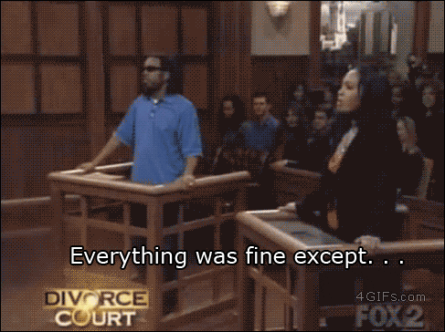
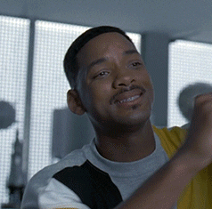
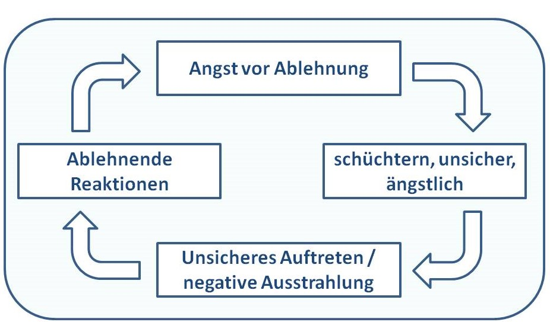
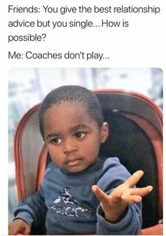

Nice Guys
By Henoch Biru
Nice Guys verstehen sich selbst als der wahrgewordene Traum aller Frauen. Höflich, zuvorkommend, intelligent und immer da, wenn du sie brauchst. Nice Guys haben keine Beziehungen, keine Affären, keine Dates, keinen Sex und vor allem keinen Plan.
Die Wahrheit liegt ausnahmsweise Mal nicht dazwischen und es gibt keinen Grund, die Situation schönzureden. Nice Guys sind Versager. Versager, weil sie nicht begreifen, dass es nicht an ihrer Nettigkeit liegt, dass sie keine Frauen abbekommen, sondern an ihrer Ignoranz gegenüber der menschlichen Natur.
12 von 10 netten Typen wären gerne diese Ananas
Der Nice Guy und die Friendzone
Du hast in deinem Freundeskreis Unmengen von hübschen, intelligenten Frauen, von denen du jede einzelne irgendwann einmal begehrt hast. Jede dieser Frauen hast du dein Geständnis – vorgetragen in einem edlen italienischen Restaurant, in der Hand einen Strauss mit 1.000 roten Rosen (mindestens!) – und daraus folgte nur ein “Du bist echt ein netter Kerl und ich habe Dich wahnsinnig gern, aber nur als Freund”.
Und weil du so ein echt netter Kerl bist…
hast du mit “Lass uns doch weiterhin so gute Freunde bleiben, ja?” geantwortet, statt der Schlampe dir gegenüber zu sagen, dass sie für das teure Essen wenigstens einmal die Beine breit machen könnte.
In der Vorstellung eines netten Typen, ist Verführung simpel. Sei höflich, respektvoll, zuvorkommend und erfülle alle Bedürfnisse einer Frau, selbst wenn das bedeutet, dass du deine eigenen dafür hinten anstellen musst. Fertig . Doch statt damit direkt nach Express nach Bitches City zu düsen , stranden sie verloren und einsam an der Küste von Friendzone Island.
Zusätzlich studieren sie Hollywood-Filme, in denen lächerlich gutaussehende Männer Herzen zum Schmelzen bringen. Alle erzählen ihnen denselben Bullshit:
Frauen fallen manchmal auf Bad Boys herein, aber im Herzen stehen sie auf nette, liebevolle Typen. Tu was sie will und du eroberst ihr Herz.
Aus normalen Typen werden nette Typen und diese tun, was nette Typen tun. Frauen auf ein Podest heben. Ihre Wünsche erfüllen. Mit Rosen und Pralinen beim Date erscheinen. Sie mit Komplimenten überhäufen. " Du bist soo hübsch. Dein Körper ist perfekt so wie er ist. Du bist so stark du wirst alles schaffen."
Sie nutzen alles, was sie gelernt haben. Doch ihre Strategie führt zu nichts, außer einem gebrochenem Herzen. Nicht beim ersten Korb. Auch nicht beim dritten. Aber irgendwann zwischen dem zehnten und zwanzigsten.
F in den Chat für unseren Bruder hier
Ihr Herz bricht, weil sie das getan haben, was ihnen gesagt wurde und sie dennoch einsam geblieben sind. Sie sind gescheitert, weil sie auf die falschen Ratschläge gehört haben. So wird es für sie unmöglich das wahre Problem zu erkenn. Das Problem netter Typen nicht ist, dass sie nett sind.
"Sei der perfekte (platonische) Freund und früher oder später wird die Frau erkennen, dass du der Mann ihrer Träume bist."
Oh, Boy.
Falls die Strategie nicht aufgehen sollte (was sie nie tut) liefere ich euch dafür die Erklärung. Im Falle des Scheiterns, liegt die Schuld nicht nur beim Nice Guy, der versucht, sexuelle Beziehungen durch soziale Bindungen zu ergaunern, sondern bei der Frau. Sie ist einfach zu blind , ihr Glück zu ergreifen.
Aber wenn er doch nur ein bisschen so wäre wie Du!
Ein bisschen so wie du? Mädel, hier sitzen 100% . Trotzdem wartest du, denn du bist dir ganz sicher, dass sie irgendwann ihren on-off Ex abschießen und merken wird, dass DU der Richtige bist.
Ja, und die Zeit gibt dir in einem Punkt recht: eines Tages steht sie vor deiner Tür und heult, bis. Er ist weg, betrogen, ein Arsch, der nur mit seinem Schwanz denken kann und du hättest ja so recht gehabt und überhaupt alles an dir tut mir viel besser. Du bist sozusagen seit Jahren bereit für diesen Moment und krempelst schon die Ärmel hoch, da sagt sie plötzlich “Du, dein Freund, der Alex.. ist der eigentlich noch single?”. Und in dem Moment wünschst du dir einfach in Flammen aufzugehen.
Aber weil Du ein echt netter Kerl bist…
…bist du ihr Trauzeuge, wenn sie nächste Woche Alex heiratet.
Dir wird klar das du mit deinem Verhalten nicht die Frau findest die deine Fürsorge mit der Liebe erwiedert nach die du so sehr suchst
Also was nun?
Wenn man jemanden anziehend findet oder sogar verliebt ist verliert man sich schnell in seinen Emotionen. Die Hoffnung an das Gefühl endlich mit dieser Person zusammenzukommen ist immer stärker als unser gesunder Menschenverstand.
1. Frauen wissen nicht was sie wollen. Aber weis das überhaupt einer?
Frauen wissen eigentlich schon was sie wollen. Das zeigen sie uns mit dem so häufig benutzten Spruch " Du wärst der perfekte Freund". Sie wissen das diese Nice Guys potenzielle Ehemänner sein können die nicht nur gut mit uns sondern auch mit unseren Freunden, Familien oder möglichen Kindern umgehen können.
Mit diesen netten Typen kann man definitiv eine lange und glückliche Beziehung führen. Wenn man sich darauf einlässt.
Und darin liegt das Problem. Es ist schwer im Augenblick zu sehen was auf Dauer gut tut, oder eben nicht. Man denkt an den Moment, der mit einem Idioten auf den ersten Blick spannender ist. Man kann es niemanden verübeln das nicht zu wissen. So gut wie niemand weiß, was er will. Weder Frau noch Mann. In uns allen existiert lediglich eine vage Idee, dass wir glücklich sein wollen, aber wir haben keine Ahnung, was das bedeuten soll oder wie wir das erreichen können. Wir glauben es zu wissen, liegen damit aber in 80% der Fällen falsch. Diese Planlosigkeit ist unser Schicksal.
Deshalb schiebe die Verantwortung für Fehler nicht immer auf das Verhalten der Frauen auch wenn das leichter ist. Das gibt dir die Chance zu lernen und dich aus dieser Situation zu verändern.
2. Be special!
Gefährlich ist es außerdem, ständig und bedingungslos verfügbar zu sein. Die unbewusste Annahme, dass Dinge oder Menschen, die schwer zu bekommen sind, besonders wertvoll sind, ist tief im Menschen verwurzelt.
Wer verliebt und zu nett ist, lässt oft alles für das Objekt der Begierde stehen und liegen. Für seine Zeit und Aufmerksamkeit muss man so rein gar nichts tun. Und das wirkt im schlimmsten Fall nicht attraktiv, sondern einfach langweilig.
Es stimmt also: Wer sich besonders macht, erschafft zumindest die Illusion, dass seine Zeit und Präsenz kostbar ist – und dass sie nicht für jeden verfügbar ist. Sei direkt & ehrlich. Wenn sie dich wieder um 3 Uhr nachts anruft und dir über die Probleme mit ihrer Ex erzählt, sag ihr nicht das wie hören will und sie nicht verletzt. Sag ihr ehrlich was du darüber denkst auch wenn es sie verärgen wird und du nicht in diesem perfekten Bild des Freundes passt der immer nur zuhört.
Der Glaube daran das dich Nettigkeit in der Liebe weiterbringt macht dich anhänglich. Hilfebedürftig. Ängstlich. Die Menschen um dich herum riechen das. Sie spüren, dass du alles für ihre Anerkennung tun würdest. Und dafür verachten sie dich.
Zeige was dich im Leben interresiert. Frauen lieben es wenn jemand sein Leben in eine bestimmte Richtung lenkt und das zielstrebig verfolgt. Was tust du unheimlich gerne und wieso? Sei es zeichnen, Sport, Geschichte oder sogar zocken. Zeige deine Leidenschaft für etwas und du ziehst Menschen an die auch eine Leidenschaft für etwas haben oder entwickeln wollen. Du musst nicht unheimlich gut darin sein. Tu es einfach weil du es liebst und lenke dein Leben danach. Egal wie dumm dieses Hobby oder Lebensweise in der heutigen Welt ist. Du wirst dabei immer Menschen kennen lernen mit denen du besser harmonierst als mit der einen der du so lange schon umsonst hinterher rennst.
Sozialer Status
„Wow, das Kurzarmhemd steht dir wirklich ausgezeichnet. Was? Du hast 300 Solowins in Fortnite? Willst du heute Abend direkt zu mir?“ – Keine Frau jemals
Weibliche Sexualität ist komplex. Bis heute gibt es keine umfassende Theorie darüber, was Frauen dazu bewegt, einen Mann attraktiv zu finden. Es kann wortwörtlich alles sein. Aussehen, Geruch, Körpersprache oder einfach die Aura die jemand austrahlt wenn man mit ihm in einem Raum ist.
In unserer Gesellschaft hängt sozialer Status nicht zwingend mit teuren Autos, Designer-Klamotten und einem guten Job zusammen. Sozialer Status ist eher die Oberfläche unserer inneren Einstellung.
Unser Status hängt nur davon ab, wie uns andere Menschen wahrnehmen. Was wiederum davon beeinflusst wird, wie wir uns verhalten, was beeinflusst wird, wie wir uns sehen. Das klingt wie das bescheuerteste Konzept aller Zeit, ist aber wahr.
Das erklärt, wieso Selbstbewusstsein, Optimismus und Mut anziehend und attraktiv ist. Es signalisiert unseren Mitmenschen, dass wir einen hohen sozialen Status haben. Das in uns das Potential steckt, erfolgreich (Geld, Macht, Freunde) zu sein.
3. Hab keine Angst vor Ablehnung
Nach dem 100. "Ich seh dich nur als Freund" ist das schlechteste was du machen kannst dich zurückzuziehen. Du bleibst in deiner sicheren Komfortzone, vermeidest Risiken und probierst nichts Neues aus… Ganz nach dem Motto: „Wer nichts macht, kann auch nicht verletzt werden.“
Das Problem an dieser Vermeidungsstrategie ist, dass du deine Ängste und Unsicherheiten nach außen ausstrahlst. Je mehr du dich zurückziehst, umso schüchterner, abweisender und sogar unsympathischer wirkst du! Das zeigt sich unter anderem auch in deiner Körperhaltung und Körpersprache.

Die erschreckend simple Lösung für dein beschissenes Liebes-Leben ist, dass du selbstbewusster, optimistischer und mutiger werden musst. Du musst lernen, Ablehnung als notwendiges Übel zu verstehen und an deiner Einstellung zum Leben und Frauen arbeiten, sowie soziale und emotionale Intelligenz entwickeln.
Und vergiss nicht:
Du hast dabei nichts zu verlieren.
Ach ja und falls du dich fragst wieso du dir gerade Tipps für die Liebe von einem anhörst der nicht mal eine Freundin hat.
